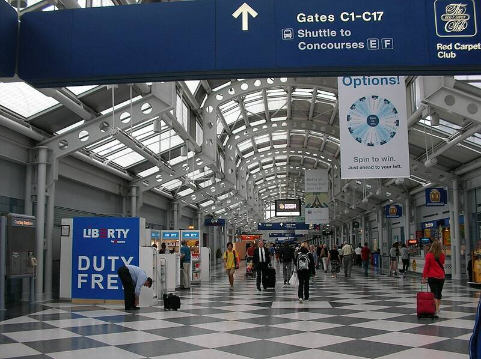

O'Hare Airport sighting
Chicago, 2006

United employees and pilots reported a disc hovering over a gate before shooting up through the clouds. 1
Open in the interactive Watcher
Chicago, 2006

United employees and pilots reported a disc hovering over a gate before shooting up through the clouds. 1
Open in the interactive Watcher